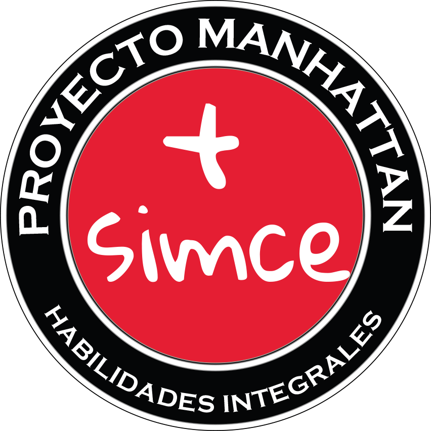

Figura 1: Logotipo del Proyecto Manhattan 2017.
Con el fin de infusionar el currículum Técnico Profesional de las distintas especialidades en la asignatura Matemática, se diseña un plan de articulación entre las competencias específicas y genéricas provenientes de la especialidad con aquellas que integran la enseñanza de la matemática en estudiantes de Tercer año Enseñanza Media. Se desarrolla un plan de articulación y adecuación evidenciados en la microimplementación curricular de la enseñanza Matemática, interviniendo con instrumentos como con planificaciones ad-hoc, que tributan por un lado, a las distintas capacidades y competencias necesarias y promovidas por los Planes y Programas propios del Currículum, como también a las capacidades genéricas, propias de la sociedad del s. XXI, descritas en el Proyecto Tuning Latinoamérica, que promocionan la formación de futuros profesionales idóneos y propenden al aprendizaje significativo y a lo largo de la vida (LLL, Life Long Learning por sus siglas en inglés).
Figura 2: El puente de Manhattan es un puente colgante que cruza el río Este en la ciudad de Nueva York, que conecta al Bajo Manhattan con Brooklyn, en Long Island. El Puente Manhattan, el más joven de los tres puentes colgantes del East River construidos por el Departamento de Transporte de la Ciudad de Nueva York, representa el entusiasmo que esperamos transmitir a las nuevas generaciones de primer y segundo año medio, por otra parte sus elaborados portales de piedra reflejan las bases que buscamos promover en nuestros estudiantes.
Es el repensar respecto del horizonte académico unido a la reformulación de estrategias que promuevan una mejora en los resultados, como en la idoneidad de los aprendizajes, que el presente proyecto se instala como una propuesta curricular que incentive el desarrollo de las competencias propias del desempeño de los estudiantes adscritos al programa de formación Técnico Profesional (TP) dosificando características propias del currículum TP en el de Matemática, ambos ubicados en el Tercer año de la Enseñanza Media.
Ciertamente, el desarrollo de la enseñanza Matemática debe ser coherente con los actuales paradigmas en educación, así es como el proyecto Tuning desliza entre sus lineas de trabajo (gonzalez2004contribucion), a las competencias (genéricas y específicas de las áreas temáticas), en este sentido, es pertinente repensar la forma en la que se diseñan las planificaciones de la asignatura matemática, en tanto, éstas no reflejan necesariamente el sentir y objeto de una enseñanza integradora y en permanente cambio, y que la actual Sociedad del Conocimiento demanda con sus constantes reformulaciones (gonzalez2004contribucion).